In this unit you will extend your study of chemical bonding to gain a theoretical understanding of the properties of solutions. The concepts presented in these modules provide a solid foundation for the study of stoichiometry, which is covered in Unit D.
This unit has two modules. The first module, Properties of Solutions, begins with an introduction to the qualitative aspects of solution chemistry. You will learn how solutions are classified and differentiated and why some substances dissolve while others do not. The second half of the module deals with the quantitative nature of solutions, primarily focusing on methods of expressing and calculating concentration. As you work through this module, you will have the opportunity to see how the concepts you learn apply to something you use every day—tap water.
The second module, Acids and Bases, focuses on a key characteristic of successful theories: their ability to accurately predict and/or explain experimental results. If a theory is not able to be used to make accurate predictions and/or explanations of experimental results, it can be restricted, revised, or even replaced. You will see that Arrhenius’s theory of acids and bases was unable to explain experimental results in its original form. However, over time, it has been revised to better predict or explain observations. You will also be introduced to the quantitative aspects of acid-base chemistry and related mathematical formulas.
Together these modules will help you learn how to investigate solutions, describe their physical and chemical properties, and describe solutions qualitatively and quantitatively.
Specifically, you will be able to
In this module you will explore the relationship between empirical properties and theoretical ideas, with an emphasis on qualitative and quantitative analysis.
The essential questions that you will look at in this module are
In this module you will learn the answers to these questions and explore several aspects of acid-base chemistry.
In Lesson 2, there are theories, like the Arrhenius’s theory, that attempt to explain and predict the behaviour of acidic and basic substances when they are dissolved in an aqueous solution. However, you may have found situations where this theory was not adequate when explaining and predicting your observations of the behaviour of an acid or base. In this module you will learn why and in what way Arrhenius's theory had to be modified to overcome these limitations.
The essential questions that you will look at in this module are
Have you ever wondered why salt dissolves in water? Scientists approach such questions by studying the observable properties of a substance (also called empirical properties) and relating them to accepted scientific theories of the time.
According to Aristotle, an ancient Greek philosopher, all matter could be classified as fire, earth, air, and water. Aristotle reasoned that the dryness of salt makes it a kind of earth and that water acted on earth in a process similar to the way water erodes rocks.
In the 1800s, the scientific community generally accepted that small indivisible particles, called atoms, were the building blocks of matter. Using the concept of atoms, Svante Arrhenius was able to explain that the difference in conductivity between salt and sugar solutions is due to a phenomenon known as dissociation. In the 1900s electrons and intermolecular forces were known to chemists, so chemists were able to use these new ideas in their theories.
In this module you will explore the relationship between empirical properties and theoretical ideas, with an emphasis on qualitative and quantitative analysis.
Think about the following questions as you complete this module:

© Tommy Maenhout/shutterstock
Tap water is a critical component of your day-to-day life. You probably use far more water than you think. According to Environment Canada, the average Canadian household uses 335 L of water per day. The uses for water are broken down as follows:
35% bathing and showering
30% flushing the toilet
20% laundry
10% drinking and kitchen chores
5% cleaning
When you turn on the tap to fill a glass with water, you have certain expectations for what comes out. If the water is coloured or smells foul, you would likely suspect that something is present in the water that you do not want to consume. What is present in tap water? Why is it there? What substances were removed during its processing? You may have heard that Canadian drinking water is among the safest in the world, but are you aware of how water is treated and monitored?
In this module you will study the processes involved with bringing drinking water from a natural source, such as a river, to your home. You will also study how water is able to form solutions with many substances.
This module will focus on the big questions:
As you complete each lesson in this module, you will investigate the following essential questions:
As a citizen you will consume tap water for many years to come. You may become interested in questions such as “What is in the water?” and “How much is able to be made available?”
When you hear the term solution, you probably visualize all the cleaning supplies in your home. While it’s true these products are solutions, there are many other items around your home that are solutions as well! For example, a gold ring is a metal-metal solution called an alloy. In this lesson you will learn how to properly classify matter and solutions.
Dissolving a substance seems to be a very simple process when you observe it—simply throw a suitable solid into water and it disappears. However, the theoretical reasons for this process baffled scientists for centuries. In this lesson you will learn how Svante Arrhenius contributed to solution chemistry with his theories of electrolyte dissociation. You will also learn how bond energy plays a critical role in the dissolving process, allowing for the existence of products like cold packs and heat packs.
This lesson discusses the qualitative aspects of solubility. Solutions are not capable of holding an unlimited amount of solute. At some point the solute will simply start collecting at the bottom of the container. There are many factors that can affect the solubility of a solid or a gas in solution, and you will learn about these factors both empirically and theoretically.
Concentration is a quantitative aspect of solution chemistry that provides a comparison of the amount of solute to the amount of solution. There are many methods of expressing concentration in consumer products, and you will learn how and why these methods are used. You will also learn how concentration measurements are used in a wide variety of applications.
Concentration must be expressed in a lab using moles rather than mass. Otherwise, mathematical relationships between the entities in a balanced chemical equation cannot be described in a straightforward manner. In this lesson you will learn how to calculate amount concentrations in a variety of situations. You will then learn how amount concentrations can be applied to dissociated ions, dilution, and solution preparation.
The assessment in this module consists of the following:
© 2007 Jupiterimages Corporation
Do you know where your drinking water comes from? Glacier meltwater in the Rocky Mountains is the source of all rivers in Alberta. The Bow River, which flows through Calgary, starts at the Bow Glacier in Banff National Park. The North Saskatchewan River, which flows through Edmonton, starts at the Saskatchewan Glacier in the Columbia Icefield.
Both Calgary and Edmonton, as well as many other communities in Alberta, use river water as drinking water. However, before the river water arrives at people’s homes, it undergoes inspection and treatment to make sure it is suitable for human consumption.
How do you know if your drinking water is safe? The Guidelines for Canadian Drinking Water Quality, published by Health Canada, gives maximum upper limits for the concentration of dangerous substances in the water supply. All drinking water must meet specific requirements in the following areas:
aesthetic quality (clarity and colour)
microbiological and chemical contamination
The inspection and treatment of water is a very complex process, and it requires a thorough understanding of solutions. In this lesson you will begin your study of solutions by learning how scientists classify matter and solutions.
What is a solution?
What kind of mixture is a solution?
You will complete the Module 4 Assignment 1 in this lesson.
Remember that the questions that are not marked by the teacher provide you with the practice and feedback that you need to successfully complete this course. You should respond to all the questions and place those answers in your course folder.

© Clint Scholz/shutterstock
Companies that sell bottled water generate millions of dollars in profit. Bottled-water consumption is growing every year.
In your course folder, write about your thoughts on the following topics related to bottled water:
Some religious and human rights organizations have expressed concern about the “privatization” of water and feel it is unethical to repackage a basic necessity of life for profit. Opponents to this objection often refer to the fact that food and shelter are just as vital, and since those items are sold as commodities, why not water too? What is your opinion about selling water?
Share your answers with your classmates or some other people.
Matter is a very general term that refers to anything that has mass and occupies space. Scientists subdivide matter into two broad categories: pure substances and mixtures.
A pure substance consists of one chemical only and may be subcategorized as either an element or a compound.
A mixture consists of two or more substances and may be subcategorized as either homogeneous or heterogeneous.
A homogeneous mixture may appear to contain only one substance with uniform properties, but in reality it may contain several different substances. A solution is a type of homogeneous mixture composed of at least one solute and one solvent. Can you think of any other examples of homogeneous mixtures?
A heterogeneous mixture visibly contains two or more different components. A chocolate chip cookie is a heterogeneous mixture since the chocolate chips can be seen as being separate from the rest of the cookie.
For more information on the different forms of matter, read “Classifying Matter” on pages 12 and 13 of your textbook.
For more information on methods used to isolate the different components of matter in a mixture, read “Crystallization” and “Filtration” on pages 802 and 803 in your textbook.
Metals such as gold are called “precious metals” because they are rare in nature and have a high economic value. Since ancient times, gold jewellery has been produced as a means of displaying wealth and status.
One problem with the use of gold for jewellery is the softness of the metal. You may have seen a gold ring that has been worn so long that it is no longer round because it has shaped itself to the finger of the person wearing it. Gold in its pure form is actually too soft to use in jewellery—it can bend out of shape very easily. Fortunately, the strength of most jewellery is improved significantly by mixing the gold with other metals to form a solution called an alloy.
Are you wearing a gold ring? Can you read the stamp on the inside of the band? You may have noticed that the stamp indicated that the gold is 10 k or 14 k. When gold is labelled as being 24 karat, it means 24 parts are pure gold and no other metal is present. If gold is 18 karat, 18 parts of the 24 total possible parts are gold and the 6 remaining parts are some other metal, which together forms the alloy. A ring that is 24-karat gold will more easily bend out of shape than a ring that is 18-, 14-, or 10-karat gold.
Not only does an alloy solution improve the strength of the jewellery, it can dramatically change the appearance of the jewellery too! The only difference between yellow gold and white gold is the type of metal being mixed with the gold. You will soon understand how solution chemistry plays an important role in the production of yellow gold and white gold rings.
A solution is composed of a solute dissolved in a solvent. Solutes and solvents may be solids, liquids, or gases. The following table shows how various combinations lead to different types of solutions.
solution: a homogeneous mixture of at least one solute dissolved in a solvent
solute: a component of a solution, the material that dissolves in the solvent
solvent: a component of a solution, the material in which the solute dissolves
| Types of Solutions | Solvent | |||
|---|---|---|---|---|
Solid |
Liquid |
Gas |
||
Solute |
Solid |
brass (tin in copper) |
ocean water (salt in water) |
does not form solutions |
Liquid |
amalgam dental fillings (mercury in silver) |
antifreeze (ethylene glycol in water) |
does not form solutions |
|
Gas |
1980s cold fusion experiments (hydrogen absorbed into the crystalline lattice of palladium) |
club soda (carbon dioxide in water) |
air (oxygen in nitrogen) |
|
The most important property of a solution is homogeneity. This means that the solution will have an identical composition throughout. If you use a micropipette to analyze an extremely small sample of a solution, it will have exactly the same composition as the larger mixture. Substances like milk and fog are not considered to be solutions because they are heterogeneous mixtures. In a true solution, the solute particles will not separate from the solvent on standing, nor can they be filtered out.
For further information, read “Solutions and Mixtures” on pages 192 and 193 up to "Properties of Aqueous Solutions" in your textbook.
When you fill a glass with tap water, there are expectations for what this water should be like. You would not expect dirty or cloudy water; and if there were a bad smell, you might feel the water is unsuitable for drinking. There are a number of physical characteristics that must be inspected to make sure the water you drink meets guidelines for aesthetic quality.
Turbidity
turbidity: the measure of the clarity of a clear liquid
Turbidity is a measure of the water cloudiness that results from the suspension of small particles. In nature, water is continuously picking up sediment and organic matter. While the particles themselves may not pose a significant health risk, dangerous micro-organisms can attach themselves to these particles. During water treatment the sediment can actually protect the micro-organisms from disinfectant processes. If water is sterilized using ultraviolet (or UV) light, a micro-organism shielded by the sediment will not be destroyed.
Not all cloudy water is associated with turbidity. For example, tap water is sometimes cloudy when it first comes out of the tap, but clears up after it stands for a few minutes. This is due to air that is trapped in the water from turbulence in the pipes. This type of cloudiness has no health concerns associated with it.
Colour
Most people expect their drinking water to be clear, but sometimes there are substances present that give the water a tint. In Canada, 90% of the drinking water comes from surface water, while the remaining 10% comes from groundwater. If surface water has a colour, it likely results from organic substances of natural origin. If groundwater has a colour, it likely results from dissolved minerals. One of the main problems with coloured water is that it can stain laundry and plumbing fixtures.
Water Tint |
Common Cause |
 |
Humic Acid Discolouration.This discolouration can be caused by humic acid, which is present naturally in soil and vegetation. At the current time, it is assumed this substance has no significant effect on human health. Research is being done to see whether the chlorination process reacts with humic acid to create toxic by-products or whether the presence of humic acid correlates to the presence of heavy metals in the drinking water. |
| 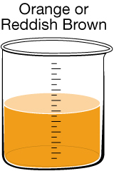 | Iron Discolouration. Iron can naturally enter drinking water from soil and rocks or from being leached out of pipes. In low doses iron is a nutrient required by the body, so there is no significant health risk.
Reddish-brown water can also occur if rust-coloured sediments are disturbed during water main repairs. This discolouration can often be remedied by letting the tap run for several minutes. |
| 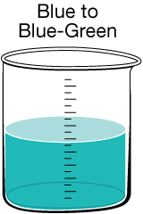 | Copper Discolouration. On rare occasions, specific conditions arise that allow copper to be leached out of pipes into the drinking water. This is not typically a hazard since copper in trace amounts is an essential nutrient. However, in older homes, lead may have been used in some of the pipes. The same conditions that can leach copper can also leach lead, which is very toxic and not easily detected.
If you suspect your home may be of the age where lead pipes were used during construction, you may want to contact your regional health authority to ask them to test your water. |
| 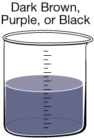 | Manganese Discolouration. Much like iron, manganese can naturally enter drinking water from soil and rocks. In addition to tinting the water, it can sometimes be found as small black specks in a glass of water. Manganese is an essential nutrient, and in small qualities it does not have any negative health effects. |
Taste and Odour
Some of the common problems experienced with the taste and smell of drinking water are listed in the following table.
Water Taste and Odour |
Common Cause |
chlorine |
Chlorine. Chlorination is used in the water-treatment process. |
rotten egg |
Hydrogen Sulfide Gas. This can occur in cases where tap water is coming from a well. Decomposing deposits of underground organic matter produce this gas, which may then enter the well water. Hydrogen sulfide gas can also enter well water that is near coal deposits or oil fields.
In some cases, the water itself is not the cause of the rotten-egg smell; rather it is coming from the drain. Anaerobic bacteria can thrive in this environment, producing hydrogen sulfide gas that accumulates underneath the food trap. When the water is turned on, the gas is forced out of the drain, yielding the rotten-egg smell. This problem can be fixed by pouring a cup of household bleach down the drain to kill the bacteria.
It is also possible that the smell is coming from the hot water heater, which has a magnesium rod that can interact with sulfates in the water to produce hydrogen sulfide gas. This is likely the problem if the rotten-egg smell is present in hot water but not cold water.
Hydrogen sulfide gas is not harmful at the levels you would find in tap water, and the bacteria that produce it pose no known health risk. However, if the smell is indeed coming from the water and has appeared for no previously known reason, it would be a good idea to call your water supplier to inform them of the problem. Hydrogen sulfide gas can, in rare cases, result from pollution or sewage contamination. |
fishy or swampy |
Algae Growth. There are many different tastes and odours that are the result of algae growth in reservoirs. Depending on the type of algae, the water can taste and smell fishy, swampy, grassy, and even like cucumber! There are no health risks associated with smells related to algae growth. |
SC 1. A number of substances, in addition to their possible classification, are listed in the following table. Recall that pure substances may be classified as an element or a compound. Mixtures may be classified as homogeneous or heterogeneous. Fill in this table. The first row is done for you.
Substance |
Pure Substance |
Element |
Homogeneous Mixture |
distilled water |
pure substance |
compound |
-------- |
smoke-filled air |
|
|
|
24-karat gold ring |
|
|
|
grape juice from concentrate |
|
|
|
salty water |
|
|
|
milk |
|
|
|
sugar |
|
|
|
18-karat gold ring |
|
|
|
freshly squeezed orange juice |
|
|
|
blood |
|
|
|
methanol, CH3OH(l) |
|
|
|
molten lead |
|
|
|
SC 2. Some substances may form a homogeneous mixture or a heterogeneous mixture, depending on environmental conditions. For each of the following, explain when it would be classified as a homogeneous mixture and when it would be classified as a heterogeneous mixture.
SC 1.
Substance |
Pure Substance |
Element |
Homogeneous Mixture |
distilled water |
pure substance |
compound |
-------- |
smoke-filled air |
mixture |
------- |
heterogeneous mixture |
24-karat gold ring |
pure substance |
element |
------- |
grape juice from concentrate |
mixture |
------- |
homogeneous mixture |
salty water |
mixture |
------- |
homogeneous mixture |
milk |
mixture |
------- |
heterogeneous mixture |
sugar |
pure substance |
compound |
------- |
18-karat gold ring |
mixture |
------- |
homogeneous mixture |
freshly squeezed orange juice |
mixture |
------- |
heterogeneous mixture |
blood |
mixture |
------ |
heterogeneous mixture |
methanol, CH3OH(l) |
pure substance |
compound |
------- |
molten lead |
pure substance |
element |
------- |
SC 2.
Read the section “Properties of Aqueous Solutions” on pages 193 and 194 in your textbook to learn more about the test for conductivity and the properties of acidic, basic, and neutral solutions.
As you read in the previous section, drinking water can contain many dissolved substances. Not only can dissolved substances provide colour or taste, but they can make a solution have other unique properties.
aqueous phase: a phase denoting a highly soluble substance that has been dissolved in water; denoted by (aq)
conductivity: the ability of a solution to transfer an electric current
electrolyte: a solution that conducts an electric current
nonelectrolyte: a solution that does not conduct an electric current
If sugar is dissolved in water, can it still it be written as C12H22O11(s)? The answer to this question is no, since the sugar molecules are no longer behaving as a crystalline solid—they are dispersed throughout the solution. The aqueous phase (aq) is used to indicate that a substance is dissolved in water. Note that a solute is said to be aqueous only if it is dissolved in water. If it is dissolved in a different solvent, such as alcohol, the phase would be written (alc).
Two other properties often considered when investigating solutions are conductivity and acidity. (Solubility is another property, which will be addressed in a later lesson.)
Some solutions demonstrate conductivity. A solution that conducts electricity contains electrolytes. Electrolytes are charged ions present within a solution. Their ability to move allows a current to be established within a solution. Tap water conducts electricity because the ions of dissolved solutes are present, while pure distilled water would not conduct electricity since no ions are present. Many molecular compounds form solutions that are nonelectrolytes because the solute does not form ions when it dissolves. Therefore, solutions containing dissolved molecular compounds do not conduct electricity.
SC 3. Examine the diagram below. Identify where an electrolyte and nonelectrolyte would appear on the chart.
![A flowchart diagram is shown. The upper box contains the label “Does the solution conduct electricity?” Two branches are shown. The branch labeled yes ends at a box with the label “Does the solution affect litmus paper?” Three branches extend from this box. The first branch has the label “blue litmus turns red,” the box the branch extends to contains the label “It’s an acid.” The second branch has the label “No change to red or blue litmus.” the box the branch extends to has the label “It’s a neutral compound.” The third branch has the label “Red litmus turns blue.” The box at the end of the branch has the label “It’s a base.” The second branch from the first box is labeled “no,” the box at the end of the branch is labeled “It’s a neutral molecular solution”.](../../images/m4/007_org_chart.jpg)
SC 3.

A great deal of concern exists about substances in drinking water. Water purification processes focus on removing many micro-organisms that have the potential to be harmful. Recently additional attention has been placed on the presence of metals, pesticides, and pharmaceutical products that may be present in the water supply.
Micro-organism |
Health Effect |
E. coli O157:H7 |
Escherichia coli comes in 50 different strains, most of which are harmless. However, some strains, such as E. coli O157:H7, can cause severe illness. This particular strain is found in the intestines of humans and other warm-blooded animals. It enters the water supply primarily though fecal contamination and waste water discharges. Illness from E. Coli O157:H7 includes bloody diarrhea and, in severe cases, kidney failure and death. |
protozoa |
A common protozoan that causes human illness is the Giardia parasite, which causes beaver fever. Symptoms of this illness include fever, diarrhea, and vomiting. The primary source of contamination is fecal waste. Giardiasis is called beaver fever because it is commonly contracted by campers who drink untreated water contaminated by fecal waste. Beavers are often blamed for the illness since they are commonly observed in water contaminated with the parasite. As it turns out, all animal waste (including human waste) has the potential to carry this protozoan. |
viruses |
Viruses that may persist in untreated water include hepatitis A and E and the Norwalk virus. The Norwalk virus enters the water supply primarily though fecal contamination and waste water discharges. Symptoms include fever, diarrhea, and vomiting. It is especially hazardous to the young and elderly. In Edmonton, Capital Health recorded 72 Norwalk virus outbreaks between September 2005 and August 2006. However, the most common transmission of the Norwalk virus is person-to-person transmission due to ineffective hand washing. |
Chemical contamination is checked for regularly because there are a variety of health-related issues from ingesting hazardous chemicals. In general, most chemical pollution is the result of human-based activities.
If you have access to the internet you can go to the links below to get more information on chemical contaminants.
Chemical Contaminant |
Health Effect |
pesticides
|
Pesticides are organic compounds that enter the water supply through direct application or surface runoff. An ecological problem associated with pesticides is that they can enter organisms at the bottom of the food chain and become concentrated higher up the food chain in the process called biomagnification. Pesticides have been linked to cancer and birth defects in humans. To read the Alberta factsheet, go to the following site: http://www3.gov.ab.ca/env/water/swq/assets/Pesticides_SurfaceWaterFactSheet.pdf |
metals
|
Heavy metals can enter the water supply from a variety of industrial processes. Lead, mercury, and chromium all are linked with a wide variety of health problems. The presence of these metals must be closely monitored in order to call drinking water safe. To watch a video from Health Canada discussing the effects of mercury on loons, go to the following site: http://www.science.gc.ca/default.asp?Lang=En&n=46379631-1 |
pharmaceuticals and personal care products
|
The long-term effects of random consumer items accumulating in the water supply are unknown at this time. Hormones, antibiotics, antidepressants, and heart medications are chemicals that persist in the water supply and resist breaking down naturally. At the current time, water treatment does not include the removal or monitoring of these chemicals. As such, they can be found in tap water, albeit in extremely small amounts. To read the Alberta factsheet, go to the following site: http://www3.gov.ab.ca/env/water/swq/assets/Pharms_in_Receiving_Waters_Fact_Sheet_FINAL.pdf |
SC 4. A number of solutions are listed in the following table. Fill in the table, using the example to guide you.
Mixture |
Type of Solution |
Solute |
Solvent |
carbonated water |
gas in liquid |
carbon dioxide |
water |
mercury amalgam dental filling |
|
|
|
brass |
|
|
|
grape juice from a powder |
|
|
|
alcoholic beverage |
|
|
|
milk |
|
|
|
humid air |
|
|
|
18-k gold ring |
|
|
|
smoke-filled air |
|
|
|
oxygen dissolved in water |
|
|
|
SC 5. Classify each of the following substances as an electrolyte or a nonelectrolyte. Also, indicate whether the solution will be acidic, basic, neutral ionic, or neutral molecular.
SC 6. There are four beakers containing visually identical solutions. If the potential solutions are HCl(aq), NaOH(aq), NaCl(aq), and C12H22O11(aq), design an experiment that will determine the solution in each beaker.
SC 4.
Mixture |
Type of Solution |
Solute |
Solvent |
carbonated water |
gas in liquid |
carbon dioxide |
water |
mercury amalgam dental filling |
liquid in solid |
mercury |
silver |
brass |
solid in solid |
tin |
copper |
grape juice from a powder |
solid in liquid |
powder |
water |
alcoholic beverage |
liquid in liquid |
ethanol |
water |
milk |
not a solution |
|
|
humid air |
gas in gas |
water vapour |
air (or nitrogen) |
18-k gold ring |
solid in solid |
various metals |
gold |
smoke-filled air |
not a solution |
|
|
oxygen dissolved in water |
gas in liquid |
oxygen |
water |
SC 5.
SC 6. First, do a conductivity test. The solution that does not conduct electricity is C12H22O11(aq). Since the remaining three beakers all conduct electricity, they can be distinguished using a litmus test. The solution that turns blue litmus red is HCl(aq), the solution that has no effect on either colour is NaCl(aq), and the solution that turns red litmus blue is NaOH(aq).
To view the next investigation, click on Module 4 Lesson 1 Page 7 on your DVD. You will answer questions based on this investigation in the assignment.
Use the information contained on the video to answer the assignment questions. If necessary, replay sections of the video to answer the questions.
Complete questions 1 to 4 in the Module 4 Lesson 1 Assignment according to the pathway you choose.
When you have finished the first four questions based on the video, complete the rest of the questions in the assignment based on the concepts you learned in this lesson.
At the beginning of this lesson, you were asked the following essential questions:
Many people know that gold is a yellow metal, but they have no idea what white gold is. People will often say that a white gold ring contains platinum! You have now learned that white gold does indeed contain gold, but the gold is in an alloy solution with other metals.
Before completing this lesson, you likely thought the term solution was nothing more than another way of saying that something is a liquid. As you have seen, solutions are far more varied and may exist as solids, liquids, or gases. You also learned that solutions are defined as homogeneous mixtures, preventing things like milk and fog from being classified as solutions. Finally, the unique properties of solutions were explored, and you learned how they can be used to distinguish visually identical solutions from one another in the lab.
aqueous phase: a phase denoting a highly soluble substance that has been dissolved in water; denoted by (aq)
conductivity: the ability of a solution to transfer an electric current
electrolyte: a solution or a molten substance that conducts an electric current
nonelectrolyte: a solution or a molten substance that does not conduct an electric current
solution: a homogeneous mixture of at least one solute dissolved in a solvent
solute: a component of a solution, the material that dissolves in the solvent
solvent: a component of a solution, the material in which the solute dissolves
turbidity: the measure of the clarity of a clear liquid
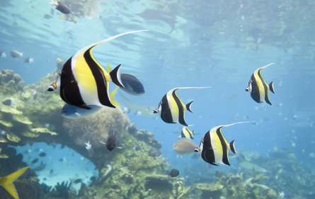
© Ian Scott/shutterstock
All organisms require clean water in order to survive. Have you ever tried to keep tropical fish? The chemistry of successfully maintaining an aquarium—especially a saltwater aquarium—is underestimated by most people who have not had to maintain one.
To properly manage an aquarium, you must test the water’s composition of dissolved substances. Some of these substances include
Dissolved substances play a tremendous role in aquarium water. Fish are living creatures that are very sensitive to the concentrations of various chemicals. The following is a list of chemicals that must be closely monitored for fish to survive in a tank:
Test kits can be purchased to test for excess amounts of ammonia. There are also chemicals that can be added to the water to neutralize the ammonia. However, the best way to solve this problem is with prevention, and an aquarium can make use of natural organisms to help control excess ammonia dissolved in the water. In general, ammonia poisoning in fish occurs most often in new tanks, but it can happen in established tanks as well if too many fish are in the tank.
Converting Ammonia to Nitrate
The nitrogen cycle in an aquarium is the biological/chemical process of removing fish waste before it becomes toxic to the fish. When a new tank is purchased, it should be “cycled” before adding fish. This process involves the establishment of beneficial bacteria in the filter media that removes ammonia by converting it into less harmful chemicals.
The three stages of the nitrogen cycle are as follows:
![A diagrammatic representation of the nitrogen cycle. Four major features are shown in the diagram: a fish, an aquatic plant, the aquarium water, and the decomposing plant and animal matter at the bottom of the tank. A large arrow labelled food points toward the fish. A large arrow points from the fish toward the bottom of the tank and a label ammonium in the water. A large arrow points from the decomposing matter toward the ammonium label. Small white arrow extends within the aquarium water part of the diagram. A branched arrow extends from the ammonium label to a second label titled nitrites. The second branch of this arrow is toward the aquatic plant. An arrow extend form the nitrite label to a third label, titled nitrates. An arrow extends from nitrates to the aquatic plant.](../../images/m4/016_fish_tank.jpg)
Stage 1: The concentration of ammonia present in the fish tank increases due to fish waste and the decomposition of uneaten food. If a new tank is being cycled, ammonia drops can be added in the absence of fish.
Stage 2: Bacteria, called nitrosomonas, in the tank take up the ammonia, which undergoes a chemical reaction that yields nitrite.
Stage 3: A different type of bacteria, called nitrobacter, converts the nitrite into nitrate, which is relatively safe compared to ammonia and nitrite. However, nitrate can become toxic over time if allowed to build up. Therefore, it is necessary to change the water regularly to keep the nitrate levels within an acceptable margin.
A failure to understand the chemistry behind aquarium water is the main reason people get frustrated with keeping fish.
It is fairly easy to introduce more oxygen to the tank. Simply mixing the water with your hand will draw air into the water and increase the oxygen content.
In this lesson you will learn why substances dissolve in water. You will also learn that aquarium chemistry provides valuable insight into the role of dissolved substances in delicate natural ecosystems.
You will complete the Module 4 Assignment 2 in this lesson.
Remember that the questions that are not marked by the teacher provide you with the practice and feedback that you need to successfully complete this course. You should respond to all the questions and place those answers in your course folder.

© 2007 Jupiterimages Corporation
In 1887, while working on his PhD in chemistry, Svante Arrhenius did substantial research on the freezing-point depression of solutions containing electrolytes. This research led to the development of a unique theory to describe the changes that occur to solutes when they dissolve in water.
Read pages 197 through 199 in your textbook to learn about Arrhenius’s theory.
Understanding this theory requires you to interpret the observable changes to a system in a new way, and to integrate what you have learned about intermolecular bonding from your study in Unit A in this course.
The results from Arrhenius’s research led him to say that ionic compounds dissociate, meaning they separate into positive and negative ions. This was the first readily accepted theoretical explanation for the conductivity of solutions.
According to Arrhenius, electrolytes, such as sodium chloride, dissolve and dissociate. Nonelectrolytes, such as sugar, dissolve but do not dissociate. This can be shown with the following equations:
electrolyte: NaCl(s) → Na+(aq) + Cl–(aq)
nonelectrolyte: C12H22O11(s) → C12H22O11(aq)
Arrhenius acid: a substance that ionizes in water to produce hydrogen ions
Arrhenius base: an ionic compound that dissociates in water to produce hydroxide ions
dissociation: the separation of ions that occurs when an ionic compound dissolves in water
ionization: a process by which a neutral atom or molecule is converted to an ion; the reaction of substances in water to create ions
Arrhenius also developed a powerful theoretical explanation to explain acids and bases at the molecular level. If an ionic compound dissociates to yield hydroxide ions in solution, it’s an Arrhenius base. This theory accounts for why substances, such as NaOH(s) and Ba(OH)2(s), form basic solutions—they give off OH– ions when dissolved in water.
Acids were more difficult to explain because they contain covalent bonds rather than ionic bonds. Nevertheless, if a substance ionizes to produce hydrogen ions in solution, it’s an Arrhenius acid. The term ionize is used because the charged particles are created when the molecule breaks up—they are not initially present like they are in bases.
One of the successes of Arrhenius’s theory was its ability to explain neutralization reactions. Hydrogen ions and hydroxide ions combine in a one-to-one ratio to produce liquid water.
H+(aq) + OH–(aq) → H2O(l)
SC 1. Each of the following substances is placed in water. Determine whether it dissociates, ionizes, or neither. Also, identify whether it will be an acidic, neutral, or basic in solution. The first one is done for you.
Substance |
Dissociates, Ionizes, or Neither |
Acidic, Neutral, or Basic |
KCl |
dissociates | neutral |
HF |
||
CH4 |
||
CH3COOH |
||
C2H5OH |
||
H2SO4 |
||
Ca(OH)2 |
||
MgCl2 |
||
C12H22O11 |
SC 2. How can you tell whether a molecular compound will yield a neutral solution or an acidic solution?
SC 3. State three important theories credited to Arrhenius.
SC 4. State one theoretical property of an acid and one theoretical property of a base.
SC 5. Why does a solution containing an electrolyte conduct electricity, whereas a solution containing a nonelectrolyte does not?
SC 6. What are three similarities and one difference between sodium nitrate and sodium hydroxide in solution?
SC 1.
Substance |
Dissociates, Ionizes, or Neither |
Acidic, Neutral, or Basic |
KCl |
dissociates |
neutral |
HF |
ionizes |
acidic |
CH4 |
neither (molecular) |
neutral |
CH3COOH |
ionizes |
acidic |
C2H5OH |
neither (molecular) |
neutral |
H2SO4 |
ionizes |
acidic |
Ca(OH)2 |
dissociates |
basic |
MgCl2 |
dissociates |
neutral |
C12H22O11 |
neither (molecular) |
neutral |
SC 2. A molecular compound can become an acid, but only if it ionizes in water to yield a hydrogen ion, H+(aq). Most molecular compounds, such as CH4(g), will not yield a hydrogen ion.
In Module 5 you will learn more about compounds that behave as acids or bases and how to use a chemical formula to predict whether a substance will have acidic or basic properties.
You may wish to look at the table “Relative Strengths of Acids and Bases at 298.15 K” in the Chemistry Data Book. Several acids are listed here, so you can check to see whether a particular molecular substance will form an acid. The acids HF, CH3COOH, and H2SO4 listed above in SC 1. are included in the data book.
SC 3. Ionic compounds dissociate into their charged ions upon dissolving, acids ionize to produce H+(aq), and bases dissociate to yield OH−(aq).
SC 4. According to Arrhenius, an acid ionizes to produce H+(aq) in solution and a base dissociates to form OH−(aq).
SC 5. An electrolyte, when dissolved, dissociates into its charged particles. This allows a current to flow. Nonelectrolytes dissolve but do not dissociate, so there are no charged particles in solution. This prevents a current from flowing.
SC 6. Similarities

Have you or someone you know ever sprained an ankle or wrist? Did it swell and change colour? It was probably wrapped in a stretchy bandage and iced. When a tissue injury occurs, such as a pulled muscle or a sprain, capillaries break and blood leaks into the surrounding tissue. This leakage causes swelling to occur and leads to significant pain.
If cold is applied to the injury immediately after it happens, the blood vessels constrict and release less fluid. This change can minimize the pain associated with the injury. The advantages of quickly reducing swelling to an injured area have made cold packs a required item in most sports trainers' kits.
An unused cold pack is normally at room temperature and feels like a plastic bag filled with water. However, when the cold pack is forcefully squeezed, an inner package breaks and the contents are allowed to mix. The cold pack becomes cold! By the end of this lesson, you will understand how a theoretical understanding of solution chemistry can explain this surprising result.
endothermic process: a change in matter that requires an input of energy to occur
exothermic process: a change in matter that releases energy when it occurs
Read the section “Energy Changes” on pages 199 and 200 in your textbook.
As you read in the section of your textbook, several steps are involved when a solid dissolves in water to form aqueous ions. The first two steps require energy to break bonds and are endothermic. An endothermic process absorbs energy from the surroundings, making the surroundings cooler. The final step releases energy as bonds form and is exothermic. An exothermic process is the opposite of an endothermic one, releasing energy into the surroundings and warming the surroundings.
The following steps essentially happen simultaneously but are separated for your understanding.
![A diagram shows alternating yellow and green spheres organized in three dimensions. The green spheres are labeled with a negative sign, and the yellow spheres are labeled with a plus sign. A water molecule represented by a single red sphere and two white spheres is beside one of the outer yellow spheres. Another water molecule is beside one of the outer green spheres. Red arrows point from each of the water molecules toward the yellow and green spheres. A label beside the arrow reads: Energy is required to break the ionic bonds holding the ions together.](../../images/m4/011_breaking_bonds.jpg)
Step 1: Breaking Bonds in the Solute (Endothermic)
The ions in the solid are held together with ionic bonds. These bonds must be broken before dissociation can occur. This step is endothermic because the energy required to break the bond comes from polar interactions with water molecules. (Think of the water molecule pulling the ion out from the solid.) As the water molecules use up their energy to break this bond, the solution cools.
![The diagram shows a single green sphere surrounded by many water molecules. At the other side of the diagram, a single yellow sphere is surrounded by water molecules. Attractive forces between particles are shown by dotted lines. Dotted lines are shown between one water molecule and the green sphere. Dotted lines are shown between one water molecule and the yellow sphere. Dotted lines are shown between the other water molecules in the diagram. The dotted lines between the water molecules are labeled with red arrows. The label on the arrows reads: Energy must be supplied to break hydrogen bonds between water molecules.](../../images/m4/012_breaking_bonds.jpg)
Step 2: Breaking Bonds in the Solvent (Endothermic)
The water molecules in the solution may be hydrogen bonded to other water molecules. These hydrogen bonds must be broken before the water molecules can be available for dissolving the ions from the solute. This step is also endothermic, and the surrounding water cools.
Step 3: Dissolving the Solute (Exothermic)
Now that the ions are in solution and sufficient water molecules are free, bonds form between the water molecules and the ions. This step is exothermic and releases energy, warming the surrounding water.
As you have just learned, the dissolving process involves both endothermic and exothermic processes. The overall energy of dissolving a solid can be determined using the following formula:
energy released to break bonds in solute
+ energy required to break bonds in solvent
– energy required to form bonds between solute and solvent
______________________________________________________
= total change in energy
Based on this formula, if the energy required is more than the energy released, there is an energy deficit and the solution will cool down. If the energy required is less than the energy released, there is an energy surplus and the solution will warm up. In Chemistry 20 you will not be able to predict whether dissolving an ionic compound is an endothermic or exothermic process. The only way you can tell, for now, is by dissolving each substance in water and measuring the change in temperature. In Chemistry 30 you will learn how to use mathematics to predict the energy released.
In the following videos, you will see how dramatic endothermic and exothermic reactions can be! To view the videos, click Module 4 Lesson 2 on your DVD.
Similar to the cold pack mentioned earlier, a heat pack contains two compartments: a large outer pouch containing calcium chloride, and water stored in the hollow inner cavity. A heat pack is used by breaking the pouch containing the calcium chloride crystals, allowing them to come into contact with water and dissolve.
SC 7. Write the balanced chemical equations for the changes that occur when calcium chloride dissolves in the water in the hot pack.
SC 8. Explain the type of energy changes involved in the hot pack during its operation.
SC 7. CaCl2(s) → Ca2+(aq) + 2 Cl-(aq)
SC 8. Many energy changes are involved:

© Creative Services, University of Alberta
Dr. David Schindler is an internationally renowned ecologist at the University of Alberta. He has conducted extensive research on how human activities can damage freshwater reserves.
“Of all the environmental problems we face today, fresh water is probably the most important. Our lakes and streams are Mother Nature’s sewers, and the water tends to reflect everything we do. There exists here a myth of abundance with regard to fresh water. We are told that Canada has more fresh water than any other country. In fact, there is a lack of fresh water available to the most populated parts of Canada, and most fresh water is in the north or flowing towards the north. Alberta, in particular, has a water deficit: evaporation is greater than precipitation.”
In the late 1960s, Dr. Schindler conducted research in the ELA (Experimental Lakes Area), a set of 58 lakes in the Precambrian Shield of northwestern Ontario. This set of lakes is reserved for large-scale experiments of ecosystem stressors. One of Dr. Schindler’s main contributions to ecology was his research on the effect of phosphorus-based fertilizers and detergents on lakes. Dr. Schindler helped show that not all nutrients dissolved in water are necessarily beneficial—they can have unforeseen consequences when imposed on delicate ecosystems.
SC 9. When a solid is dissolved in solution, it seems to disappear. Why does this happen? Is dissolving a physical change or chemical change?
SC 10. Explain the difference between an endothermic process and an exothermic process.
SC 11. Is it theoretically possible to dissolve a substance without using energy?
SC 12. Why is it important to consider the breaking of hydrogen bonds between water molecules when calculating the net energy of dissolving a solid?
SC 9. Dissolving occurs when the molecules of a liquid surround the solute, resulting in dissociation, ionization, or dispersion. Dissolving a substance is a physical change since no new substances are produced.
SC 10. An endothermic process draws energy from the surroundings. An observation of many endothermic changes is a reduction in the temperature of the system or matter being investigated. For example, water evaporation is endothermic. Your skin feels colder when water evaporates because energy is drawn from your skin to fuel the evaporation.
An exothermic process releases energy to the surroundings, increasing the temperature. For example, the chemical reaction in a heat pack is exothermic. The surplus energy warms up the solution and the heat pack feels hot.
SC 11. No. The act of dissolving always requires energy to dissociate, ionize, or disperse a substance.
SC 12. Water molecules do not simply float around in isolation; they are closely packed with other water molecules and experience intermolecular forces. Before a group of water molecules can come together to surround and dissolve a solute, they must first break free from the hydrogen bonds with adjacent water molecules. Therefore hydrogen bonds between water molecules can be considered to have attractive forces between them, some of which must be overcome in order for associations to occur between water molecules and the solute particles. Given the large number of water molecules involved in this process, the energy can be significant even though it is typically far less than the energy required to break the ionic bond.
Complete the Module 4 Lesson 2 Assignment according to the pathway you choose.
In this lesson you explored the following essential questions:
Dissolving a solute might seem quite simple, but as you have learned from your work in this lesson, many events at the molecular level are involved with this process. Imagine for a moment what life would be like if dissociation and intermolecular forces did not exist. Without dissociation, a beaker of water could not dissolve ionic solids—they would simply accumulate at the bottom. Without intermolecular forces, sugars could not dissolve, and you would be deprived of an energy source required for survival.
Now that you have learned about the many chemical events required to dissolve a solid, you can appreciate how complex processes at the molecular level can result in simplicity at the macroscopic level. While billions of bonds are being broken and formed in the endothermic process of dissolving ammonium chloride in a cold pack, you get to simply squeeze the bag, shake, and apply.
Arrhenius acid: a substance that ionizes in water to produce hydrogen ions
Arrhenius base: an ionic compound that dissociates in water to produce hydroxide ions
dissociation: the separation of ions that occurs when an ionic compound dissolves in water
endothermic: absorbing energy from the surroundings
exothermic: releasing energy to the surroundings
ionization: a process by which a neutral atom or molecule is converted to an ion; the reaction of substances in water to create ions

© L Kragt Bakker/shutterstock
Have you ever had a shower that left you feeling like you weren’t able to wash all the soap off your body? Tap water, especially in Alberta is often “hard” due to the presence of calcium and magnesium dissolved in the water. While hard water is safe to drink, there are problems associated with its use.
The minerals found in hard water have a tendency to form limescale deposits in household pipes, reducing the flow of water. Also, kitchen and bathroom fixtures that regularly use tap water may build up soap scum due to the fact that calcium and magnesium can react with detergents to form a residue that is difficult to rinse away. You may wish to view some examples of problems caused by hard water.
Calcium is present in tap water in the form of calcium carbonate. Even though calcium carbonate is generally insoluble in water, the concentration is so low that it remains dissolved in solution. Depending on the context, hard-water buildup can arise in different ways:
Do you have a pot or fixture that has hard-water buildup? It is easy to remove hard-water calcium deposits using an acid solution, such as vinegar. If the buildup is on a flat surface, cover the surface with vinegar for several minutes and the buildup will dissolve. If the surface is upright, you could scrub the surface with a paper towel soaked in vinegar. Commercial products are also available for this process and can usually do the job more quickly.
In this lesson you will learn about the solubility of various substances in water. You will also learn about the chemistry of water softeners, a common way to treat hard water.
You will complete the Module 4 Assignment 3 in this lesson.
Remember that the questions that are not marked by the teacher provide you with the practice and feedback that you need to successfully complete this course. You should respond to all the questions and place those answers in your course folder.
© Stephen Beaumont/shutterstock
Fill a cup with approximately 100 mL of lukewarm water. Add a teaspoon of salt, stirring until all of the salt has dissolved. Repeat this procedure until you notice salt on the bottom that does not dissolve, no matter how much you stir.
What you are observing is an example of a saturated salt solution. You were probably able to get 5 teaspoons to dissolve, but the sixth one would not.
Now pour the solution into another glass, making sure none of the undissolved salt is transferred. Put this glass in your freezer for about half an hour, and then observe it. Record your observations. Allow the cooled salt water from the freezer to sit at room temperature. Record any changes that occur.
Can you explain the changes that occurred with the salt water as you cooled it and allowed it to warm?
Share your explanation with your classmates or some other people.
saturated solution: a solution that contains the maximum quantity of solute for a specified temperature; in which no more solute will dissolve at a specified temperature; at maximum solute concentration
solubility: the concentration of a saturated solution at a specified temperature
In the Try This activity in the previous page you observed a saturated solution undergoing change.
There is a limit to how much solute can be dissolved in a solvent. You may notice this when you pour sugar into tea or coffee. If you pour in too much, the sugar will simply sit at the bottom of the cup. The following illustration shows what happens when maximum solubility is reached.
The solubility of NaCl(s) in water at 20 °C is 36 g/100 mL. What that means is only 36 g of solute may be absorbed by 100 mL of water at this temperature.
![The diagram shows four identical beakers, each half-filled with water. Above each beaker is a drawing of a spoon containing a powder. The spoon above the first beaker has the maximum amount of powder in it. The contents of the beaker appear light grey in colour. The label below the first beaker reads: There are 50g of salt in the spoon. The spoon above the second beaker has some of the powder removed. The contents of the second beaker appears light blue in colour. The label below the second beaker reads: 30g is poured into the solution. All the solute dissolves. The spoon above the third beaker has most of the powder removed. The contents of the third beaker appears light blue in colour. Some white powder is shown on the bottom of the beaker. The label below the third beaker reads: Another 10g is poured into the solution. 4g of undissolved solute remains on the bottom. The spoon above the fourth beaker has all of the powder removed. The contents of the fourth beaker appears light blue in colour. A larger quantity of white powder is shown on the bottom of the beaker. The label below the fourth beaker reads: When the rest of the salt is poured into the solution, 14g of undissolved solute remains on the bottom.](../../images/m4/019_beakers.jpg)

© Claudio Baldini /shutterstock
To learn about how temperature and pressure affect the solubility of solids, liquids, and gases in water, read pages 221 and 222 in your textbook.
In the introduction to this lesson, you learned about some of the problems associated with hard water.
What is soft water, and how does a water softener work? Soft water is free of calcium and magnesium ions. A water softener works because of the presence of an ion-exchange resin, which is typically found in the water filter as small beads. The ion-exchange resin functions by removing magnesium and calcium ions from the water in a process that exchanges them for sodium ions. In other words, the price you pay for getting soft water is that the water becomes salty.
Some of the benefits of using soft water in the home include the following:
Some of the negative issues include the following:
The process of softening water increases the sodium content of water. This results in the water being slightly salty.
SC 1. Use the kinetic molecular theory to explain why solids and gases have opposite solubility characteristics.
SC 2. The solubility of sucrose is 180 g/100 mL at 0 °C. How much sugar is dissolved in the following situations?
SC 3. The solubility of nitrogen gas is 0.003 g/100 mL at STP conditions. How much nitrogen gas is dissolved in the following situations?
SC 4. Explain the difference between the terms solubility and saturated solution.
SC 5. If you have a solution of table salt dissolved in water, describe three ways you could turn this into a saturated solution.
SC 6. Give two reasons why stains are easier to remove in warm water than in cold water.
SC 7. In the following graph, which substance is likely a gas?

SC 1. Solids dissolve better in warm solutions because the water molecules have more energy to break bonds holding the solid together. Gases dissolve worse in warm solutions because the gas molecules have more energy and move faster, escaping the solution.
SC 2.
SC 3.
SC 4. The term solubility refers quantitatively to the maximum amount of solute that can be dissolved in water. It can be expressed as a number with units of g/mL (or mol/L). A saturated solution is a qualitative term describing a solution that will not dissolve any more solute at a given temperature.
The two terms may be used in a sentence as follows:
A saturated solution of sucrose has a solubility of 487 g/100 mL at 100 ºC.
SC 5. Three ways you could turn this solution into a saturated solution are as follows:
SC 6. At warmer temperatures, both the detergent and stain substances will have a higher solubility in water. Also, with the increase in temperature, the rate of chemical reactions increases.
SC 7. Substance B is likely a gas because the solubility decreases as temperature increases.
One of the most important tools you will use while doing chemistry is a solubility table. A solubility table is used to determine the state of an ionic substance when it is placed in water. Copies of this table are also located inside the back cover of your textbook and in the Chemistry Data Book.
Ion |
H+, Na+, NH4+, NO3–, ClO3–, ClO4–, CH3COO– |
F– |
Cl–, I–, Br– |
SO42– |
CO32–, PO43–, SO32–, |
IO3–, C2O42– |
S2– |
OH– |
Solubility greater than or equal to 0.1 mol/L (very soluble) |
most except:
|
most |
most |
most |
H+, Na+, K+, NH4+ Except: Li2CO3 |
H+, Na+, K+, NH4+, Li+, Ni2+, Zn2+ Except: Co(IO3)2, Fe2(C2O4)3 |
H+, Na+, K+, NH4+, Li+, Mg2+, Ca2+ |
H+, Na+, K+, NH4+, Li+, Sr2+, Ca2+, Ba2+ |
Solubility less than 0.1 mol/L (slightly soluble) |
none |
Li+, Mg2+, Ca2+, Sr2+, Ba2+, Fe2+, Hg22+, Pb2+ |
Cu+, Ag+, Hg22+, Hg2+, PbI2 |
Ca2+, Sr2+, Ba2+, Hg22+, Pb2+, Ag+ |
most |
most |
most |
most |
You may wonder why the solubility table says “very soluble” and “slightly soluble” instead of simply saying a solution is aqueous or solid. The reason these phrases are used is because all substances dissolve to some extent, so even a relatively insoluble compound, like CaCO3(s), may have a few errant ions in solution. However, for the sake of simplicity, you are allowed to use the aqueous state (aq) for “very soluble” and the solid state (s) for “slightly soluble” because the vast majority of entities will exist in these states.
Example 1: Determine the state of calcium carbonate in water.
First, locate the carbonate ion in the top row, and then locate the calcium ion underneath. Since the calcium ion is not listed as one of the ions in the "very soluble" section, it must be in the “most” category.
Calcium carbonate has low solubility in water, so it can be written CaCO3(s).
Example 2: Determine the state of barium hydroxide in water.
First, locate the hydroxide ion in the top row, and then locate the barium ion underneath. Barium hydroxide has high solubility in water, so it can be written Ba(OH)2(aq).
While the solubility table provides a lot of useful information, it is limited to predicting the state of ionic solids in water. Since you will need to predict the states of many other substances in water, you should memorize the following rules and apply them when you write dissociation equations:
Now work through the following examples to put these four rules into use.
Example 3: Determine the state of ethanol, C2H5OH(l), in water.
Ethanol is a polar molecule, so it will dissolve in water to become C2H5OH(aq).
Example 4: Determine the state of octane, C8H18(l), in water.
Octane is a nonpolar molecule and does not dissolve. It stays as C8H18(l).
Example 5: State the major entities present when Sr(OH)2(s) is placed in water.
According to the solubility chart, Sr(OH)2(s) is highly soluble, so it will dissociate. The major entities present in water will be Sr2+(aq), OH–(aq), and H2O(l). When you are asked to state the major entities present, coefficients are not required and water should be included in the list since solvent molecules also count.
Example 6: Write the balanced dissociation equation for sodium sulfate.
According to the solubility chart, Na2SO4(s) is soluble in water, so the balanced dissociation equation is
Na2SO4(s) → 2 Na+(aq) + SO42–(aq).
SC 8. For each of the following substances, state whether it has high or low solubility and list the major entities present when placed in water. The first row is done for you.
Substance to Be Placed in Water |
Solubility |
Major Entities Present |
Ag |
low |
Ag(s), H2O(l) |
SrCl2 |
|
|
HCl |
|
|
HNO3 |
|
|
(NH4)2HPO4 |
|
|
C8H18 |
|
|
NH4NO3 |
|
|
Au(OH)3 |
|
|
CH4 |
|
|
O2 |
|
|
CaCO3 |
|
|
Ag2SO4 |
|
|
MgCl2 |
|
|
CH3OH |
|
|
HF |
|
|
SC 9. Each of the following substances was on the table in question 1. Explain how to predict the major entities present.
SC 10. Complete the dissociation equations for each of the following substances in water. Make sure you balance the equation.
SC 8.
Substance to Be Placed in Water |
Solubility |
Major Entities Present |
Ag |
low |
Ag(s), H2O(l) |
SrCl2 |
high |
Sr2+(aq), Cl–(aq), H2O(l) |
HCl |
high |
H+(aq), Cl–(aq), H2O(l) |
HNO3 |
high |
H+(aq), NO3–(aq), H2O(l) |
(NH4)2HPO4 |
high |
NH4+(aq), HPO42–(aq), H2O(l) |
C8H18 |
low |
C8H18(l), H2O(l) |
NH4NO3 |
high |
NH4+(aq), NO3–(aq), H2O(l) |
Au(OH)3 |
low |
Au(OH)3(s), H2O(l) |
CH4 |
low |
CH4(g), H2O(l) |
O2 |
low |
O2(g), H2O(l) |
CaCO3 |
low |
CaCO3(s), H2O(l) |
Ag2SO4 |
low |
Ag2SO4(s), H2O(l) |
MgCl2 |
high |
Mg2+(aq), Cl–(aq), H2O(l) |
CH3OH |
high |
CH3OH(aq), H2O(l) |
HF |
high |
H+(aq), F–(aq), H2O(l) |
SC 9.
SC 10.
At the beginning of this lesson you completed a Try This exercise where you made observations and wrote explanations about what was occurring within a saturated solution.
dynamic equilibrium: the idea that there is a balance between two opposing processes (forward and reverse) occurring at the same rate
When the solution was cooled, you observed that salt crystals were seen on the bottom of the beaker. While it may appear the salt crystals are no longer dissolving, they actually are. The amount of solid appears to remain constant because even though some of the solid is dissolving, an equal amount of solid is crystallizing out of the solution. This process is called dynamic equilibrium.
Read the section “Explaining Saturated Solutions” on pages 224 to 226 in your textbook. Pay close attention to the description of the experimental evidence that was used to test the theory of dynamic equilibrium described on pages 225 and 226.
How does the figure below demonstrate the dynamic equilibrium in the saturated solution of salt water you observed earlier in this lesson?

In the dynamic equilibrium involving a salt crystal in a saturated solution, there is still dissociating, but the ions that leave are immediately replaced by other ions that enter the solid from the solution. This process is similar to having a party for 20 people—if two new guests arrive and two people leave, the total number of people present at the party remains the same.
SC 11. State two conditions required for a solution to be in dynamic equilibrium.
SC 12. While salt is being poured into a beaker that initially contains distilled water, would the system be in a state of dynamic equilibrium?
SC 13. Explain what is happening to a salt crystal in a dynamic equilibrium system.
SC 14. Describe an experimental technique to test for dynamic equilibrium in a saturated solution of strontium chloride.
SC 11. Two opposing processes must be occurring at exactly the same rate. The solution must be in a closed system (the volume of water is constant, the amount of solute is constant, the temperature is constant, etc.).
SC 12. No. Dynamic equilibrium means two opposing processes must be occurring at exactly the same rate. When the salt is being poured in, it is dissolving at a far greater rate than it is crystallizing.
SC 13. A salt crystal is both dissolving and crystallizing at the same rate. As such, the mass of the crystal remains constant, even though it is constantly being broken and reformed.
SC 14. Create a saturated solution of strontium chloride with some undissolved solute visible at the bottom. Add a few drops of radioactive strontium chloride; then measure where the radiation is coming from within the solution. After time passes, if radiation is coming from within the solid, that means the radioactive sample has crystallized into the solid.
To view the lab, click on Module 4 lesson 3 Page 8 on your DVD. You will be required to login with a username (LA48) and password (7984).
Note: To start the video you must click inside the video window (the large play button may not start the video). If the video does not play, there are three things to try.
1. Update your QuickTime player.
2. Our technical staff recommends using Firefox as your browser. You can download this free browser from the internet at Firefox. Then update your QuickTime player.
3. I have found Google Chrome plays the videos on the first download but it is not recommended or supported because it has other issues with compatibility with D2L.
Use the information contained on the video to answer the assignment questions in part 1. You may wish to replay sections of the video to obtain all your observations.
Answer questions 1 to 7 in the Module 4 Lesson 3 Assignment according to the pathway you choose.
In the first three lessons of this module, you learned about the qualitative aspects of solution chemistry. Review the first three lessons and state at least five things you learned, giving an example to support your statement. Here is one example:
“I learned that as the temperature of an aqueous solution increases, the solubility of a gas in the water decreases. For example, warm pop will go flat faster than cold pop.”
Also, write a description of at least two things you learned in these lessons and explain how they have challenged your prior knowledge about solutions.
Save your work in your course folder.
You may wish to share your answers with your classmates or some other people and make revisions based on their comments.
Watch and Listen
Is it possible to make a solution supersaturated? To view the video, click on Module 4 lesson 3 Page 8 on your DVD. The userid is LA48 and the password is 7984.
Complete the remainder of the questions in the Module 4 Lesson 3 Assignment.
In this lesson you explored the following essential questions:
In this lesson you learned that solubility is an important aspect of solution chemistry. The solubility of a substance is directly linked to the temperature of the solution, and in the case of gases, external pressure can be a major solubility factor as well. Solubility rules can be used to successfully predict the states of elements and compounds in water. Finally, you learned about dynamic equilibrium, a theoretical explanation of what is happening in a saturated solution at the molecular level.
The first three lessons of this unit focused exclusively on qualitative aspects of solution chemistry. In Lessons 4 and 5, you will investigate the quantitative aspects of solutions.
dynamic equilibrium: the idea that there is a balance between two opposing processes (forward and reverse) occurring at the same rate
immiscible: a term used to describe liquids that do not dissolve in each other
saturated solution: a solution that contains the maximum quantity of solute for a specified temperature; in which no more solute will dissolve at a specified temperature; at maximum solute concentration
solubility: the concentration of a saturated solution at a specified temperature

© Wade H. Massie/shutterstock
Now that you have considered where your drinking water comes from, how do you know if it is really safe to drink? Does it come from a well or a reservoir? How is it treated before it gets to your home? Who is accountable if something goes wrong with your tap water?
Various government agencies set safety standards that water treatment plants must adhere to. Since it is nearly impossible to remove all dissolved substances from a solution, maximum allowable concentrations are in place to protect those who drink the water.
In this lesson you will learn how concentration can be expressed using a variety of units. You will then use this knowledge to gain a better understanding of the chemistry associated with water quality.
You will complete the Module 4 Assignment 4 in this lesson.
Remember that the questions that are not marked by the teacher provide you with the practice and feedback that you need to successfully complete this course. You should respond to all the questions and place those answers in your course folder.

Many terms are used to describe the concentration of a solution. A powdered drink mix added to a large quantity of water is called a dilute solution, whereas a powdered drink mix added to a small quantity of water is considered to be a concentrated solution.
Dilute and concentrated are qualitative terms that only have meaning in the context of comparing similar solutions. Saying a solution is dilute provides no information about the specific quantities of solute and solvent.
Concentration is defined as the ratio of the quantities of solute to the total solution. This ratio can be written in a variety of ways. As you progress through your exploration of solution chemistry, you will encounter concentrations in many different forms. These forms of showing concentration will be important when you study the maximum allowable concentrations of contaminants in drinking water.
The next time you pick up a container, look at the label. Chances are that the liquid inside is a solution, and the label will express the concentration of a component. What might surprise you is that a variety of means to express concentration is used. In this section you will learn about the most common methods for expressing the concentration for commercial and other purposes.
Percentage Volume per Volume (% V/V)
Read and carefully work through “COMMUNICATION example 1” on page 203 in your textbook.
After you have completed your reading, work through the following example, followed by the Self-Check problems below.
Example 1: 40 mL of hydrogen peroxide is poured into 150 mL of water. Determine the % V/V concentration of this solution.
This question is different since the water volume is given instead of the total solution volume. It’s easy to get the solution volume. It is 40 mL + 150 mL = 190 mL.
Now, divide the volume of hydrogen peroxide by the total volume of the solution.

SC 1. A 350-mL solution contains 140 mL of ethanol. Determine the % V/V concentration of this solution.
SC 2. A 450-mL solution contains 160 mL of liquid hydrogen peroxide. Determine the % V/V concentration of this solution.
SC 3. 65 mL of methanol is poured into 230 mL of water. Determine the % V/V concentration of this solution.
SC 4. A 2.1-L solution contains 54 mL of methanol. Determine the % V/V concentration of this solution.
SC 5. A vinegar solution contains acetic acid in water and is labelled 11% V/V. Express this concentration as mL per 100 mL of solution.
SC 1.

SC 2.

SC 3. Remember, you must use the total volume of the solution (65 mL + 230 mL = 295 mL).

SC 4. Remember, the volumes need to be expressed in the same units.

SC 5.


© Larry St. Pierre/Shutterstock
A percentage weight per volume (% W/V) concentration expresses the mass of solute as a percentage of total solution volume. Breathalyzers use % W/V percentages to indicate the alcohol content in blood. If a breathalyzer gives a reading of 0.05% W/V, it means 0.05 g of alcohol is present for every 100 mL of blood.
To learn more about this calculation, read from the last paragraph on page 203 to “COMMUNICATION example 2” on page 204 in your textbook.
After you have completed this reading, answer the Self-Check questions below.
SC 6. A student dissolved 16 g of sodium bicarbonate in water to make a 135-mL solution. Determine the % W/V concentration of the resulting solution.
SC 7. In making a 860-mL solution, 71 g of copper(II) sulfate was dissolved in water. Determine the % W/V concentration of copper(II) in the solution.
SC 8. Suppose 0.020 kg of sodium bicarbonate is dissolved in water to make an 810-mL solution. Determine the % W/V concentration of the resulting solution.
SC 9. A solution contains 9.3% W/V ethanol. Express this in units of g/100 mL.
SC 10. A breathalyzer gives a reading of 0.120% W/V. Determine the mass (in mg) of alcohol present in 100 mL of blood.
SC 6.

SC 7.

SC 8.
SC 9.
SC 10.

There is 120 mg present in 100 mL of blood.

© RTimages/shutterstock
A percentage weight per weight (% W/W) concentration expresses the mass of a substance as a percentage of total mass. % W/W concentrations may be used in many different contexts, including mixtures that are not true solutions. For example, toothpaste may read sodium monofluorophosphate (0.76% W/W). This means that 0.76 g of sodium monofluorophosphate is found in every 100 g of toothpaste.
Work through “COMMUNICATION example 2” on page 204 of your textbook. Then work through Example 2 below.
Example 2: A 0.43-kg solution contains 98 mg of potassium iodide. Calculate the % W/W concentration of this solution.
To calculate the % W/W concentration, the units for mass must be the same. For this example, both masses were converted into grams, although the conversion could have been milligrams or kilograms. The key thing is that both the numerator and denominator have identical units.

SC 11. A 9.83-g sterling silver ring contains 0.76 g of copper. Determine the % W/W concentration of the copper in the ring.
SC 12. A salt solution has a mass of 354 g. After evaporating all the water, 58 g of solute remain. Determine the % W/W concentration of the salt in solution.
SC 13. 72 mg of sodium nitrate is dissolved in 450 mg of water. Determine the % W/W concentration of the sodium nitrate.
SC 14. A 0.51-kg solution contains 89 mg of copper(II) sulfate. Calculate the % W/W concentration of this solution.
SC 15. A solution contains 2.3% W/W magnesium chloride. Express this in mg/100 mg.
SC 11.

SC 12.
SC 13. Remember, you must use the total mass of the solution (72 mg + 450 mg = 522 mg).
SC 14. Remember, the masses must be expressed in the same units. In this case, both masses were converted into grams (g).

SC 15.
What to Remember When Using Each Type of Calculation |
% V/V Calculations |
% W/V Calculations |
% W/W Calculations |
Units |
Make sure the solute and solution volumes are the same units (both expressed as mL or L). |
The mass (numerator) will be in grams (g) and the volume (denominator) will be in millilitres (mL). |
Make sure that both solute and solution masses are the same units (g or kg) before dividing to get the percentage. |
What the Fraction Means |
The volume of solute divided by the total (combined) volume of the solution. (The combined volume can be found by adding solute and solvent, provided the units are the same.) |
The mass of the solute divided by the total volume of the solution. (In % W/V solutions, the solute and solvent are not added to get the total volume because the units are different.) |
The mass of solute divided by the total (combined) mass of solution. (The combined mass can be found by adding solute and solvent, provided the units are the same.) |
Word Description for Expressing Concentration This Way |
“ ______ mL of solute per 100 mL of solution.” |
“ ______ g of solute per 100 mL of solution.” |
“ ______ g of solute per 100 g of solution.” |
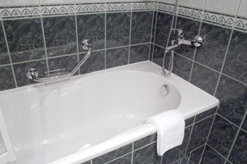
© Nikola Hristovski/shutterstock
Sometimes the concentration of solute in a solution is very small. To communicate the concentration of such solutions, parts per million or even smaller concentrations are used.
You may have heard reports on climate change often refer to the ppm concentration of carbon dioxide in the atmosphere. A part per million may be thought of as one drop of water in a bathtub full of water or as 1 second every 11.6 days.
Read ”Parts per Million Concentration” and “COMMUNICATION example 3” on pages 204 and 205 in your textbook.
Parts per million, as the name suggests, requires that the mass of solute be a million times less than the mass of solution. For that reason, the units expressing solute are typically milligrams (mg), whereas the units expressing solvent are typically kilograms (kg). This leads to a ppm concentration in mg/kg. Water is a unique solvent in that 1 L has a mass of 1 kg. As such, ppm concentrations in water can be expressed as mg/L instead of mg/kg. In this course you can always assume that water is the solvent unless specifically told otherwise. The following summarizes the three main ways you can approach ppm calculations:

This example shows how to convert one means of expressing concentration to another.
Example 3: Express 38 ppm as a % W/W concentration.
First, convert from ppm into mg/kg.

Next, express the numerator and denominator with the same unit. This is required for % W/W concentration calculations. In this example, convert the denominator from kilograms into milligrams.

Finally, divide and express a % W/W concentration.

For more practice on calculations involving concentration, carefully work through “COMMUNICATION examples” 5, 6, and 7 on page 207 in your textbook.
SC 16. 80 mg of potassium chloride is dissolved in water to make a 0.85-L solution. Express the concentration in ppm.
SC 17. 5.2 g of sodium nitrate is dissolved in water to make a 290-L solution. Express the concentration in ppm.
SC 18. 29 g of magnesium sulfate is dissolved in water to make a 0.80-kg solution. Express the concentration in ppm.
SC 19. 3.4 g of sucrose is dissolved in water to make a 759-g solution. Express the concentration in ppm.
SC 20. 0.050 g of sodium chloride is dissolved in water to make a 600-g solution. Express the concentration in ppm.
SC 21. 0.020 kg of lithium bromide is dissolved in water to make a 600-kg solution. Express the concentration in ppm.
SC 22. Express 780 ppm as a ratio in units of mg/L.
SC 23. Express 41 ppm as a % W/W concentration.
SC 16.

SC 17.

SC 18.
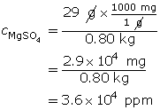
SC 19.

SC 20.
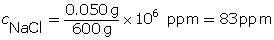
SC 21.
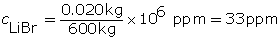
SC 22.

SC 23.


© J. Helgason/shutterstock
Units of parts per billion are used for solutes that are extremely dilute. The mathematical rules for ppb concentrations are very similar to ppm concentrations—the only difference is that the mass of solutes is a billion times less than the mass of solution. The mass of solute is so small that it is measured in micrograms (μg). The μ that you see is the Greek letter mu, and a microgram is one millionth of a gram. Recall that a milligram is one-thousandth of a gram. A part per billion may be thought of as one drop of water in a full swimming pool or as 1 second every 32 years.
Work through the following examples to practise calculations involving ppb concentration.
Example 4: 150 μg of lithium bromide is dissolved in water to make a 25-L solution. Express the concentration in ppb.

The units of the solute are in micrograms (μg), so no conversion is required. The units of water are in litres (L), so no conversion is required.
Example 5: 3.7 mg of sodium chloride is dissolved in water to make a 115-g solution. Express the concentration in ppb.
The units of the solute are in milligrams, so convert milligrams (mg) into micrograms (μg). The units of water are in grams, so convert grams (g) into kilograms (kg).

SC 24. 115 μg of sodium nitrate is dissolved in water to make a 32-L solution. Express the concentration in ppb.
SC 25. 5.1 mg of magnesium sulfate is dissolved in water to make a 220-g solution. Express the concentration in ppb.
SC 26. 2.0 × 10–3 g of sodium chloride is dissolved in 72 g of water. Express the concentration in ppb.
SC 27. A sample of water contains 900 ppb lead. Write this as a ratio.
SC 28. A fish contains 200 ppb mercury. Write this as a ratio.
SC 29. Convert 230 ppm into ppb.
SC 30. Convert 188 ppb into ppm.
SC 24.

SC 25.
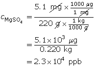
SC 26.
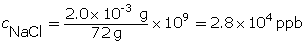
SC 27.

SC 28.

SC 29.

SC 30.

One of the more interesting field trips you may be able to do is to visit the water treatment facility in your local area. If you are unable to visit a facility directly, you may wish to view the video below.
You may wish to take a virtual tour of the City of Saskatoon's water treatment plant. You can find this virtual tour on the Internet using the combined search terms “Saskatoon,” “water treatment,” and “events.”

© Muriel Lasure/shutterstock
If y ou want to view additional information about the government’s role in ensuring water quality, click on Module 4 Lesson 4 Page 7 on your DVD.
Complete the Module 4 Lesson 4 Assignment according to the pathway you choose.
© din/Shutterstock
Now that you have an understanding of the regulations protecting your drinking water from harmful levels of contaminants, it is time to consider how contaminants affect the rest of the water system.
The water in rivers and lakes is a necessity of life for many organisms, including those at the bottom of the food chain. The term plankton refers to marine and freshwater organisms that live in water and serve as food for larger animals.
If plankton live in water contaminated with mercury, plankton will accumulate the toxin over time. Fish consume a large amount of plankton and, in doing so, accumulate the mercury stored in the plankton. This process continues all the way up the food chain and presents a significant health concern for higher-order mammals, including humans.
The process described here is called biomagnification, and it is a serious environmental concern.
In Canada’s North, the traditional Inuit way of life is threatened because the food supply contains dangerous levels of mercury. In this lesson you will learn how some of the products in your home pollute the water supply and contribute to biomagnification.
You will complete the Module 4 Assignment 5 in this lesson.
Remember that the questions that are not marked by the teacher provide you with the practice and feedback that you need to successfully complete this course. You should respond to all the questions and place those answers in your course folder.

© 2008 Jupiterimages Corporation
Historically, people believed that diluting any type of substance renders it permanently harmless. A foul odour that dissipates no longer smells bad, and red food dye poured into a vast body of water will eventually vanish. But do these substances really disappear? Use relevant chemical concepts to explain how the dilution of a substance is not a way to treat pollution.
If “The solution to pollution is NOT dilution,” then what processes can be used to treat waste? Consider what you have learned in this lesson about dissolving, solubility, and solutions. Is it a good strategy to dilute solutions containing harmful substances?
Save your answers in your course folder.
You may wish to share your answers with your classmates or some other people and make revisions based on their comments.

In Lesson 4 you learned to express concentration as % V/V, % W/V, % W/W, in parts per million, and in parts per billion. While labels like percentage weight per volume are great for consumer products, and parts per million is often used for environmental work, chemists in a lab typically express concentration using another set of units. In a previous science course you learned about the mole, the chemical quantity used to express matter. Do you remember what a “mole” is? Later, in Modules 5 and 6, you will see that expressing quantities of substances using moles is favoured because these values can be used to predict quantities of other substances involved in a chemical reaction.
To review your understanding of the mole, read page 51 in your textbook.
In this lesson you will learn how to calculate amount concentration. You will also learn how amount concentration can be applied to a wide variety of situations, such as dilution and solution preparation in a lab.
Amount concentration expresses the solute in number of moles and the volume in litres. In many cases, you will have to convert a given mass into a number of moles before finding the amount concentration.

Use this formula to find the number of moles.
n = number of moles (mol)
m = mass (g)
M = molar mass (g/mol)
Use this formula to find the amount concentration.
c = amount concentration (mol/L)
n = number of moles (mol)
V = volume (L)
Read "Amount Concentration" on page 205 in your textbook and work through “COMMUNICATION example 4.” Carefully work through the additional example below.
Example 1: Determine the amount concentration of 0.42 mol of magnesium sulfate dissolved in a 200-mL solution.
Example 2: Determine the amount concentration of 3.0 g of copper(II) nitrate dissolved in a 200-mL solution.
First, determine the number of moles of solute.

Now, calculate the amount concentration.

The amount concentration of the copper(II) nitrate solution is 0.080 mol/L.
SC 1. Determine the amount concentration of 6.3 mol of magnesium sulfate dissolved in 5.4 L of solution.
SC 2. Determine the amount concentration of 2.0 g of iron(III) chloride dissolved in 50 mL of solution.
SC 3. Determine the amount concentration of 150 mg of sodium chloride dissolved in 47.0 mL of solution.
SC 1.


The amount concentration of the magnesium sulfate solution is 1.2 mol/L.
SC 2.

Now, calculate the amount concentration.
The amount concentration of the iron(III) chloride solution is 0.25 mol/L.
SC 3.
First, determine the number of moles of solute.
Now, calculate the amount concentration.
The amount concentration of the sodium chloride solution is 0.0546 mol/L.
Formulas are often required to be manipulated in order to solve for a desired quantity. The following diagrams show how the two formulas used in these examples can be manipulated.
Use the manipulated formulas as you work through “SAMPLE problem 5.1” and “COMMUNICATION examples” 10 and 11 on pages 209 and 210 of your textbook and Example 3 below.
Example 3: What volume is required to make a 0.54-mol/L solution with 21 g of sodium hydroxide?
The mass of NaOH is given. Convert the mass to number of moles, and then determine the volume.

First, determine the number of moles of solute.

Now, calculate the volume.

The volume of sodium hydroxide required is 0.97 L.
SC 4. What mass of sodium sulfate is present in 1.20 L of a 0.23-mol/L solution?
SC 5. What mass of magnesium phosphate is present in 5.00 L of a 230-mmol/L solution?
SC 6. What volume of solution is required to make a 0.86-mol/L solution with 18 g of ammonium nitrate?
SC 7. What volume of solution is required to make a 0.55-mol/L solution with 0.29 kg of sodium hydroxide?
SC 4.

First, determine the number of moles of sodium sulfate.
Now, calculate the mass of sodium sulfate.

39 g of sodium sulfate is present.
SC 5.

First, determine the number of moles of magnesium phosphate.

Now, calculate the mass of magnesium phosphate.
302 g of magnesium phosphate is present.
SC 6.
First, determine the number of moles of solute.

Now, calculate the volume.
0.26 L of solution is required.
SC 7.
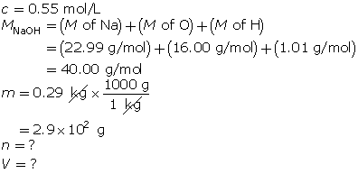
First, determine the number of moles of solute.

Now, calculate the volume.
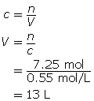
13 L of solution is required.
Recall from previous lessons that many substances dissociate in water to form ions. It is possible to calculate the concentration of these ions using amount concentrations and a balanced chemical formula. Read “Concentration of Ions” on pages 210 and 211 in your textbook for more information on the effect dissociation has on the ion concentration in a solution. Then work through “COMMUNICATION examples” 12, 13, and 14 on pages 211 and 212.
SC 8. Determine the amount concentration of calcium ions and acetate ions in a 0.81-mol/L solution of calcium acetate.
SC 9. Determine the amount concentration of the sodium ions and carbonate ions in a 0.65-mol/L solution of sodium carbonate.
SC 10. Determine the amount concentration of the ammonium ions and the phosphate ions in a 1.15-mol/L solution of ammonium phosphate.
SC 11. Determine the amount concentration of potassium ions and dichromate ions in a solution made by dissolving 42.5 g of potassium dichromate to make a volume of 160 mL.
SC 12. What mass of aluminium chloride must be dissolved to make 52 L of solution with a chloride-ion concentration of 0.45 mol/L?
SC 8.

Species |
Ca(CH3COO)2 (aq) |
Ca2+(aq) |
CH3COO–(aq) |
Coefficient |
1 |
1 |
2 |
Concentration |
0.81 mol/L |
|
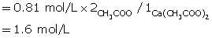 |

SC 9.

Species |
Na2CO3 (aq) |
Na+(aq) |
CO32+(aq) |
Coefficient |
1 |
2 |
1 |
Concentration |
0.65 mol/L |
|
|
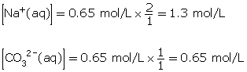
SC 10.
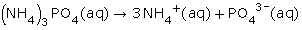
Species |
(NH4)3PO4 (aq) |
NH4+(aq) |
PO43–(aq) |
Coefficient |
1 |
3 |
1 |
Concentration |
1.15 mol/L |
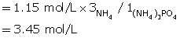 |
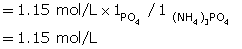 |
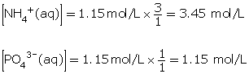
SC 11.

Since concentration is not given, use the mass and volume to determine the amount concentration of the solute.
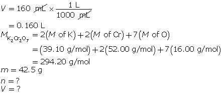
Determine the number of moles of potassium dichromate.

Determine the amount concentration of potassium dichromate.
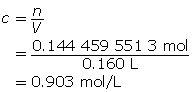
Now, use ratios to determine the concentration of the potassium and chromate ions.
Species |
K2Cr2O7 (aq) |
K+(aq) |
Cr2O72–(aq) |
Coefficient |
1 |
2 |
1 |
Concentration |
0.903 mol/L |
|
|


SC 12.

Species |
AlCl3(aq) |
Al3+(aq) |
Cl–(aq) |
Coefficient |
1 |
1 |
3 |
Concentration |
|
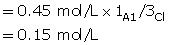 |
= 0.45 mol/L |
Use the information to determine mass of solute.

Determine the number of moles of aluminium chloride solution.

Now, determine the mass of aluminum chloride that must be dissolved.
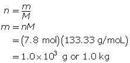
To make the desired solution, 1.0 kg of aluminium chloride must be dissolved.
© Linda Muir/shutterstock
Many solutions found in a lab are not actually bought as solutions but as solutes—the solutions are made in the lab by dissolving the solute in water. This procedure greatly reduces the transportation costs of bringing chemical solutions to the end user. A bottle of antacid tablets is economical since you can make 100 antacid solutions from an initial purchase of five dollars. If these 100 solutions all had to be bought separately as solutions, they would cost hundreds of dollars!
Preparing solutions requires the use of specialized glassware. Using appropriate glassware allows for the preparation of solutions with precise concentrations. Here are some of the specialized glassware you will use in preparing solutions.
Volumetric Flask

Volumetric containers are used to measure a specific volume with a very high degree of precision. For example, a 100-mL volumetric flask has a white line that indicates 100 mL. The line is specific for each flask, and its location was determined at standard temperature. This calibration process makes volumetric flasks some of the most precise equipment in a chemistry lab.
Volumetric Pipette
A volumetric pipette is also a calibrated piece of glassware, but it is used for lower volumes. Look at the pipettes in Figures 12 and 13 on the bottom of page 800 of your textbook. A 10-mL volumetric pipette has only one line indicating precisely 10 mL. Graduated pipettes may have markings for each 0.1 mL. See the graduated pipette at the bottom of the page in Figure 13.
To view the following videos, click the links on Module 4 Lesson 5 Page 6 on your DVD.
If you have access to the internet, view the video “Preparation of a Solution by Direct Addition.”
This next video of the same process requires a username and password. Your Username is nelsonchem_student and your password is nelsonchem_onlinelearning.
“Preparing a Standard Solution.”
In these videos, you have the opportunity to watch the process to prepare a solution of specific, accurate concentration (a standard solution) and to answer the self check question. Pause the video so you can complete the question and check your answers.
If you cannot view the video, a listing of these steps also appears in "Preparing a Standard Solution from a Solid Reagent" on page 803 of your textbook.
Self Check Question : A standard solution of 0.350-mol/L iron(II) sulfate is to be prepared. The required volume is 100.00 mL, and the solute has the chemical formula FeSO4 • 7H2O(s). Describe how to prepare this solution.
Step 1: Calculate the mass of solute required.

First, determine the number of moles of FeSO4 • 7H2O(s) required.

Now, calculate mass of solute required.
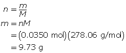
The mass of FeSO4 • 7H2O(s) required is 9.73 g.
Step 2: Measure 9.73 g of iron(II) sulfate heptahydrate in a clean, dry beaker (weighing boat or weighing paper) using an electronic balance.
Step 3: Pour about 50 mL of distilled water into a beaker. Transfer the iron(II) sulfate heptahydrate to the beaker containing the water. Stir to dissolve.
Step 4: Transfer the contents of the beaker into a 100-mL volumetric flask. Rinse the beaker and transfer the rinse water to the volumetric flask.
Step 5: Add distilled water to the volumetric flask until the calibration line is almost reached. Use an eyedropper to add the remaining water so that the bottom of the meniscus meets the calibration line.
Step 6: Stopper the flask and mix the solution by inverting.
Many labs prepare stock solutions of a specific chemical. Stock solutions are often used to create new, less concentrated solutions of the same solute by dilution, usually with water. A procedure for preparing a standard solution by dilution appears in "Preparing a Standard Solution by Dilution" on pages 803 and 804 of your textbook.
To view the following video, click the link on Module 4 Lesson 5 Page 7 on your DVD.
If you have access to the internet, view the following Solution by Dilution video which shows the process of using the lab equipment to dilute a solution. Your Username is nelsonchem_student and your password is nelsonchem_onlinelearning.
![Dilution formula representation. Left-hand side of equation: lower case c subscript lower case I multiplied to upper case V subscript lower case i. Below this half of the equation is a beaker containing a small volume of solution with an intense grey colour. The right hand side of the equation is lower case c subscript lowercase f multiplied by uppercase V subscript lower case f. Below the right-hand side of the equation is a beaker containing a larger volume of solution, but with a less intense shade of grey.](../../images/m4/044_flasks.jpg)
Dilution is the process of increasing the amount of solvent, resulting in a less concentrated solution.
Read “Preparation of Standard Solutions by Dilution” on pages 216 and 217 in your textbook. Work through the two "COMMUNICATION" examples as you will be answering similar questions.
What quantities of a solution change when it is diluted? Which quantities do not change?
The dilution formula ciVi = cfVf, is a convenient way to calculate changes that will occur when a dilution is performed. The variables in this equation are
ci = initial concentration of solution
Vi = initial volume of solution
cf = final concentration of solution
Vf= final volume of solution
Why is the dilution formula expressed as an equality? What chemical quantity is equal to both sides of the equation?
Now work through the following example problem.
Example 5: Calculate the volume of water necessary to dilute 50 mL of a 0.50-mol/L sodium chloride solution to 0.30 mol/L.
The final volume of the dilute solution is 83 mL. Since the volume transferred from the original solution was 50 mL, an additional 33 mL of water must be added to the original solution.
SC 13. A 100-mL solution of 0.180-mol/L sodium sulfate is required. Determine the mass of sodium sulfate required to make this solution.
SC 14. A 100-mL potassium permanganate solution with a concentration of 0.0870 mol/L is required. Write out the pre-lab and procedure for making this solution.
SC 15. A stock solution of phosphoric acid with a concentration of 14.6 mol/L is available in a lab. From the stock solution, a 1.50-L phosphoric acid solution is to be created with a concentration of 0.400 mol/L. Determine the volume of stock solution required to make the new solution.
SC 16. A 1.00-L stock solution containing 99% V/V isopropyl alcohol is available. What volume of the stock solution is required to make 200 mL of a 70% V/V solution?
SC 17. A 17.8-mol/L concentrated sulfuric acid solution is available in a lab. A 1.00-L solution with a concentration of 0.800 mol/L is required. Write out the pre-lab and procedure for making this solution.
SC 13.
First, determine the number of moles of sodium sulfate.

Now, determine the mass of sodium sulfate.

The mass of sodium sulfate required is 2.56 g.
SC 14.
Step 1: Calculate the number of moles of solute required; then determine the mass of potassium permanganate required.

First, determine the number of moles of potassium permanganate.

Now, determine the mass of potassium permanganate.

The mass of KMnO4(s) required is 1.37 g.
Step 2: Measure out 1.37 g of potassium permanganate in a clean, dry beaker using an electronic balance.
Step 3: Pour about 50 mL of distilled water into the beaker containing the potassium permanganate. Stir to dissolve the solute.
Step 4: Transfer the contents of the beaker into a 100-mL volumetric flask, rinsing out the beaker and collecting the rinse water in the volumetric flask.
Step 5: Add distilled water until the calibration line is almost reached; then add distilled water using an eyedropper until the calibration line is reached.
Step 6: Stopper the flask, and mix by inverting.
SC 15.


SC 16.


Note that the total volume of the stock solution (1.00 L) was not required for this question.
SC 17. Step 1: Calculate the volume of stock solution needed for the procedure.

Step 2: Pour approximately 0.5 L of distilled water into a 1.00-L volumetric flask.
Step 3: Measure 44.9 mL of sulfuric acid stock solution using a pipette.
Step 4: Slowly transfer the concentrated acid from the pipette to the volumetric flask containing the water. Caution: Mixing acids and water can produce a great deal of heat. Swirl the contents of the volumetric flask occasionally to distribute heat from the solution.
Step 5: Carefully add distilled water until the calibration line is almost reached; then use an eyedropper to add the water until the calibration line is reached. Swirl contents as in step 4 to distribute heat form the solution. If the flask feels too hot, stop adding water until the flask contents cool.
Step 6: Stopper the flask, and carefully mix by inverting.
Complete the Module 4 Lesson 5 Assignment according to the pathway you choose.
In this lesson you explored the following essential questions:
Your study in this lesson has expanded your knowledge of solution chemistry and has enabled you to prepare and dilute solutions of a desired concentration. In solution chemistry, many questions must be solved mathematically; and you now have an understanding of how formulas can be applied to predict the concentration of dissociated ions in a solution.
amount concentration: the proportion of solute (in moles) to volume of solution
stock solution: a concentrated solution that is used in the preparation of more dilute solutions of the same solute
amount concentration: the proportion of solute (in moles) to volume of solution
aqueous phase: a phase denoting a highly soluble substance that has been dissolved in water; denoted by (aq)
Arrhenius acid: a substance that ionizes in water to produce hydrogen ions
Arrhenius base: an ionic compound that dissociates in water to produce hydroxide ions
concentration: a property of solutions; the mass, volume, or number of moles of solute present in proportion to the quantity of solvent or total solution
conductivity: the ability of a solution to transfer an electric current
dissociation: the separation of ions that occurs when an ionic compound dissolves in water
dynamic equilibrium: the idea that there is a balance between two opposing processes (forward and reverse) occurring at the same rate
electrolyte: a solution that conducts an electric current
endothermic: absorbing energy from the surroundings
exothermic: releasing energy to the surroundings
immiscible: a term used to describe liquids that do not dissolve in each other
ionization: a process by which a neutral atom or molecule is converted to an ion; the reaction of substances in water to create ions
nonelectrolyte: a solution that does not conduct an electric current
saturated solution: a solution that contains the maximum quantity of solute for a specified temperature; in which no more solute will dissolve at a specified temperature; at maximum solute concentration
solubility: the concentration of a saturated solution at a specified temperature
solute: a component of a solution, the material that dissolves in the solvent
solution: a homogeneous mixture of at least one solute dissolved in a solvent
solvent: a component of a solution, the material in which the solute dissolves
stock solution: a concentrated solution that is used in the preparation of more dilute solutions of the same solute
turbidity: the measure of the clarity of a clear liquid
Think back to the questions you were asked at the beginning of the module.
As you worked through these lessons, you likely came across a few things that challenged your prior beliefs about solutions. Perhaps the following thoughts came to mind:
The assessment in this module consists of the following: